長庚大學管理研究所博士，專精決策分析、運籌管理與 AI 跨領域應用。
結合學術研究能量與產業實務經驗，致力於推動產學合作、
創新教學與招生策略，為萬能科大企管系注入新動能。
長庚大學管理研究所博士，結合決策科學、人工智慧與產業實務，具備跨領域整合研究與應用開發能力。
本人畢業於長庚大學管理研究所博士班，研究專長為決策分析、運籌管理及人工智慧之跨領域應用。自學習歷程中，我逐漸體認到自身在數學建模與問題分析上的興趣與能力，因此在碩博士階段選擇深入智慧化決策技術的領域，並積極參與研究與系統開發實務。博士期間，我不僅投入研究論文撰寫與投稿，並成功申請與執行國科會研究計畫，研究成果陸續發表於 Expert Systems with Applications、Computers & Industrial Engineering 等國際頂尖期刊。
熟悉多準則決策方法（AHP、DEMATEL、TOPSIS）、多目標規劃、模糊理論，處理複雜不確定環境下的最適化配置。
專精於新世代 AI Agent 自動化流程（如 Antigravity CLI 應用），能快速利用大語言模型、文字提取與 AI 機器人解決企業及校務實務問題。
熟練掌握 Web MVC 架構、C#、.NET、MSSQL 資料庫設計與優化，具備自主開發資訊系統能力，能將決策模型轉換為實體軟體平台。
光明健康事業股份有限公司 (2022.05 - 2023.09)
主導醫病共享決策平台開發。協助同集團之明通化學製藥推動行銷制度轉型、媒體採購分析、風險評估與決策 SOP 制定。
長庚大學數位應用與運籌管理實驗室 (2023.09 - 2025.07)
協助國科會研究計畫之申請、管理、經費核銷。參與得舒飲食研究之定性定量分析、問卷設計，並協助撰寫期末報告與國際期刊論文。
長庚大學校務研究中心 (2019.09 - 2021.03)
擔任全端工程師，負責開發維護校務與財務公開專區。另開發校內 SAS Visual Analytics 數據分析平台，進行使用者數據分析以支援校務決策。
負責國科會「高血壓患者使用得舒飲食之定性與定量分析」兩年期計畫書之撰寫、研究架構規劃與預算編列。具備獨立研提與執行政府專案的成熟能力。
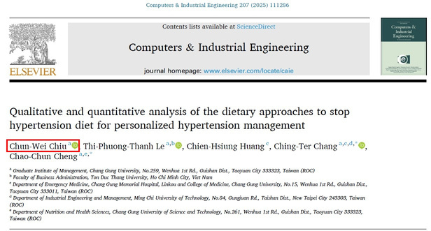
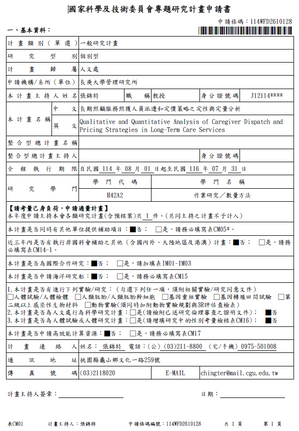
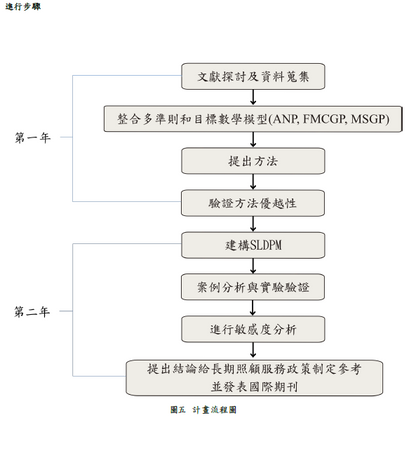
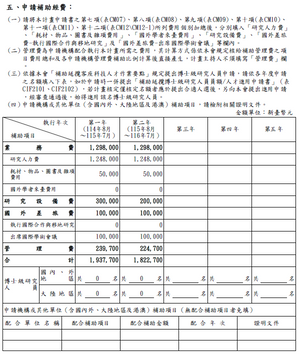
主導開發醫病共享決策系統（Web MVC架構），以C#、.NET、MSSQL建構，並串接 Google OR-Tools 進行多準則模型計算，將醫療臨床決策數位化。
為明通製藥制定媒體採購與供應商篩選之 SOP，設計涵蓋成本、觸及率及品牌契合度的多元評估指標，降低採購風險並優化議價流程。
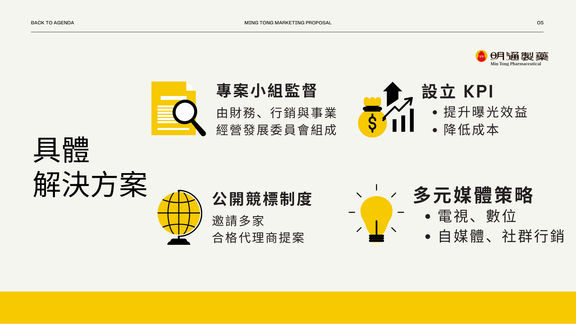
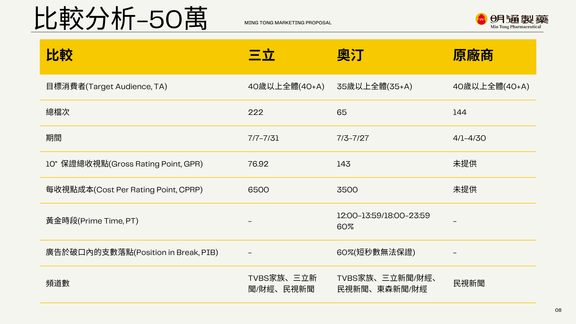
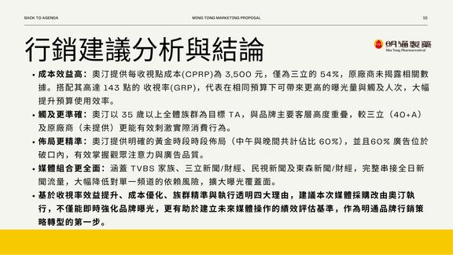
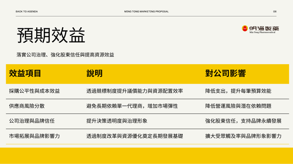
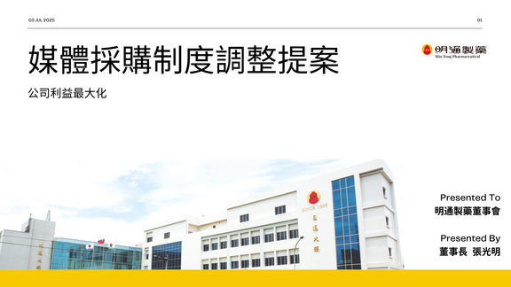
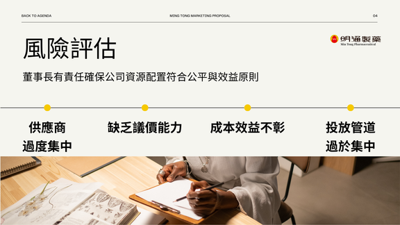
開發校務與財務公開系統，運用 .NET 與 MSSQL 優化資料庫結構，並透過 SAS 數據平台追蹤點擊指標，以視覺化報表支持行政決策。
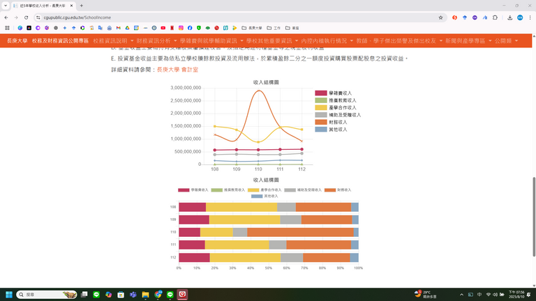
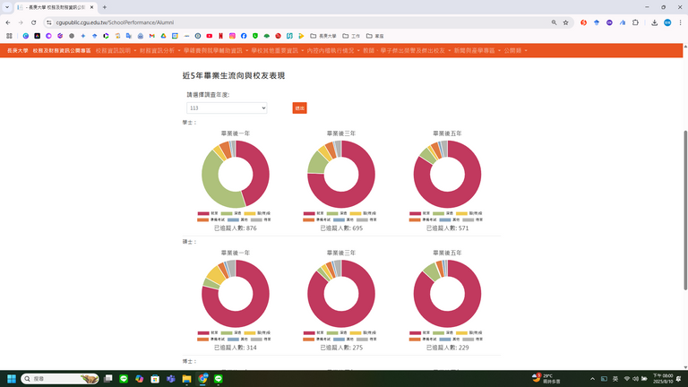
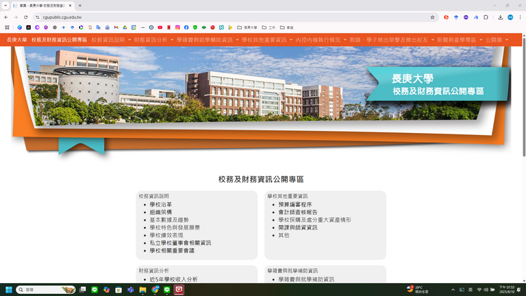